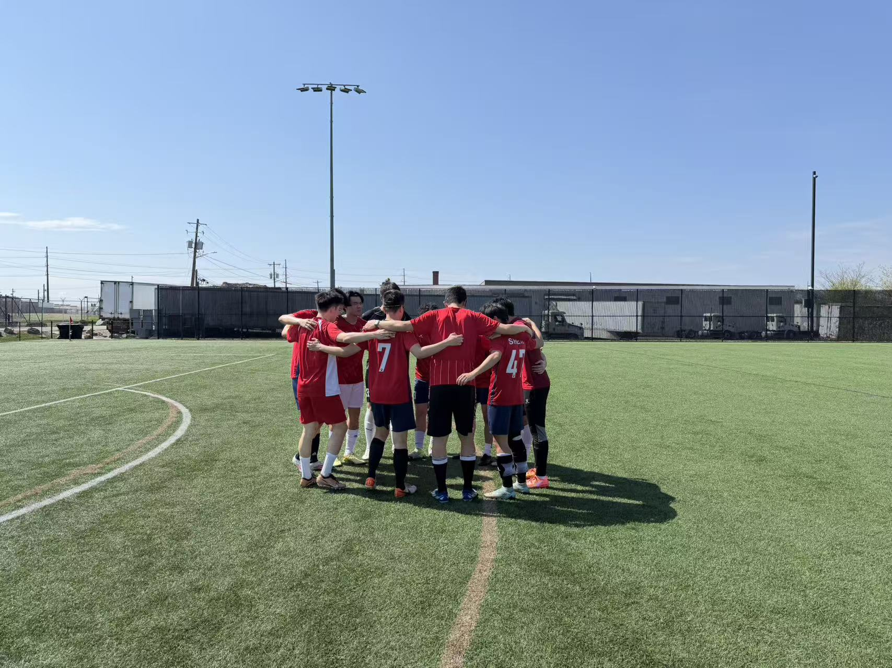
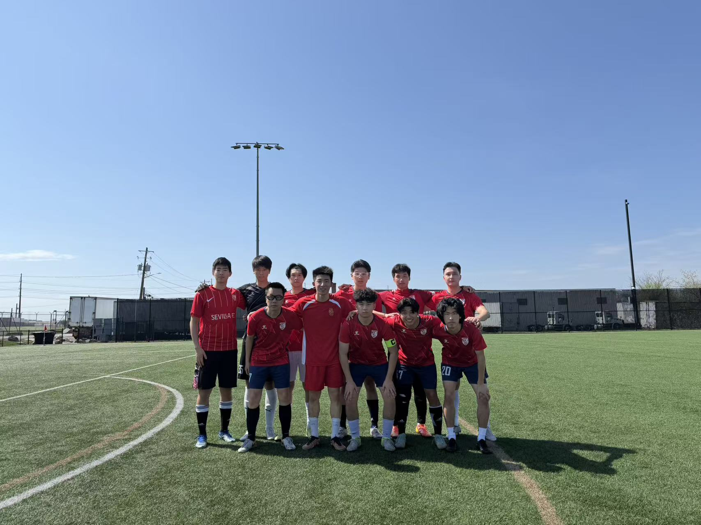
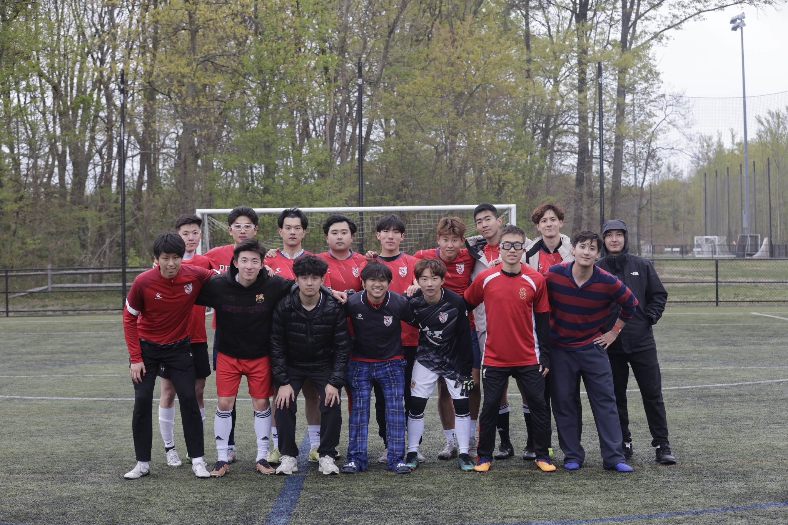

Football is one of the biggest parts of my life outside engineering. I play with a Rutgers student team and help lead the group as captain.

Being part of the team means more than showing up for matches. As captain, I help with coordination, communication, and keeping the group connected on and off the field.
It is also one of the places where I’ve learned the most about trust, responsibility, and working with different personalities toward the same goal.


Different roles. One team. A shared responsibility to make the group work.